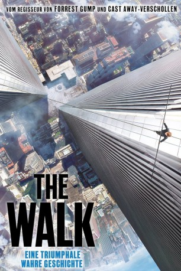

 
 IMDB-Wertung: 7.3 / 10
IMDB-Wertung: 7.3 / 10  Metascore:
Metascore: 
Es ist eine ebenso irrsinnige wie inspirierende Aktion, die in den späten Sechziger Jahren im Wartezimmer eines Zahnarztes ihren Anfang nimmt. Dort liest Philippe Petit (Joseph Gordon-Levitt) vom Bau des World Trade Centers. In diesem Moment hat der tollkühne französische Akrobat die Herausforderung gefunden, auf die er sein Leben lang gewartet hat. Er entschließt sich, ein Drahtseil zwischen den Twin Towers zu spannen und darauf zu laufen. Dem verbotenen Balanceakt gehen zermürbende Vorbereitungen voraus, bei denen Petit Hilfe von internationalen Unterstützern, seiner Freundin Annie Allix (Charlotte Le Bon) und seinem Mentor Papa Rudy (Ben Kingsley) bekommt. Nach der anstrengenden Vorarbeit balanciert Petit am 7. August 1974 ganze 45 Minuten auf dem Seil, bis er von Sicherheitsleuten überwältigt wird...
Jahr: 2015
Dauer: 123 Minuten
FSK: 6
Land: USA Studio: Sony Pictures ReleasingTonspuren: DD2.0 - ,
Untertitel: , , Deutsch, Englisch, Französisch, , , Koreanisch, , , , , ,
Auflösung: 1080p (1920x1080) Größe: 10752 MB
Genre: Thriller, Drama, Abenteuer, Biographie
Regisseur:  Robert Zemeckis
Robert Zemeckis
Drehbuch: Robert Zemeckis, Christopher Browne, Philippe Petit
Soundtrack: Alan Silvestri
Darsteller:
Datei: X:\2015(N-Z)\Walk, The (2015, FSK6, 1920x1080) 3D.mkv seit 21.12.2015
Festplatte: HD 2015(A-Z)
 Es gibt insgesamt 161 Filme in der Gruppe '2015(N-Z)'
Es gibt insgesamt 161 Filme in der Gruppe '2015(N-Z)'